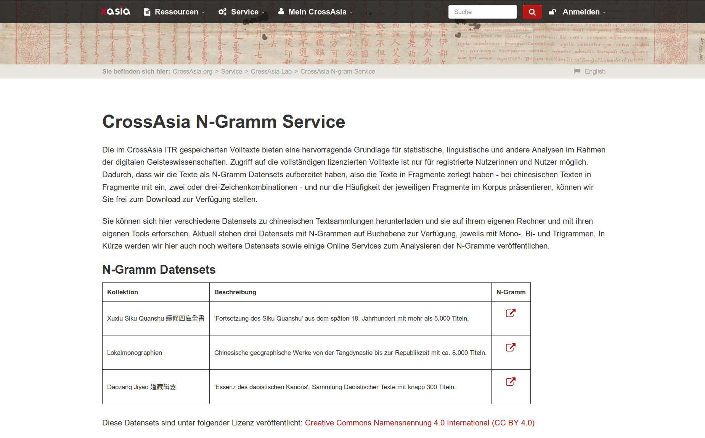
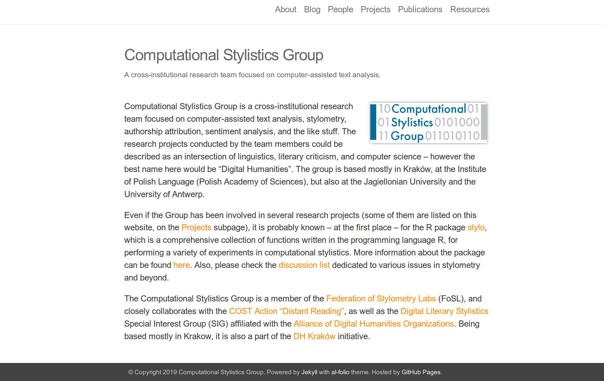
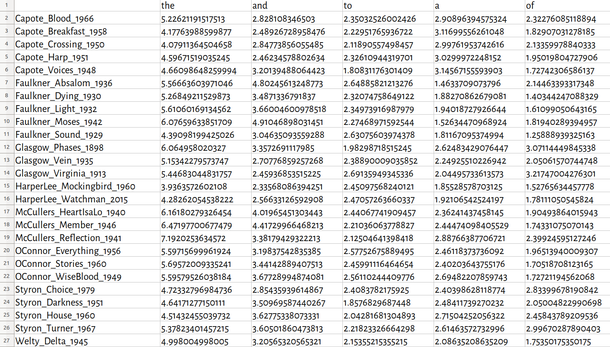
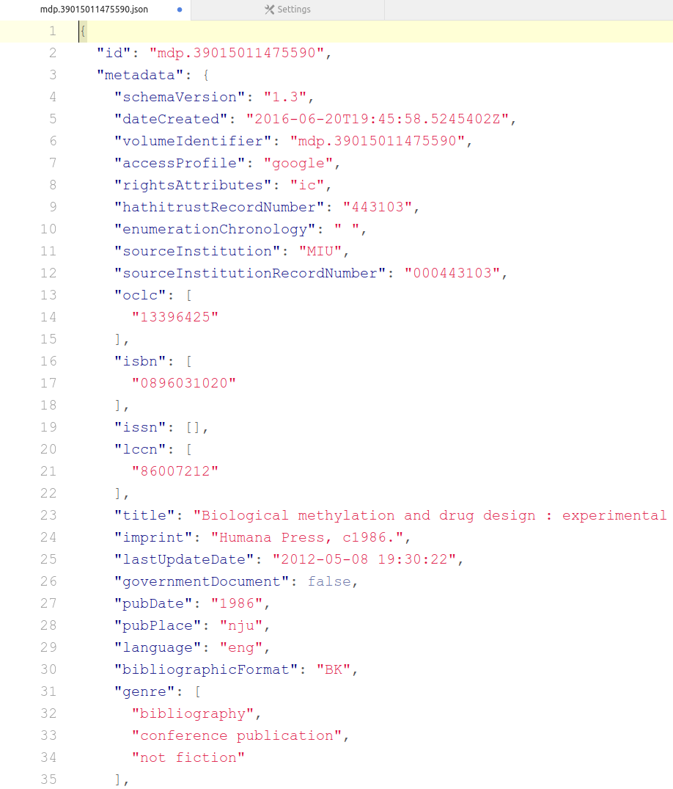
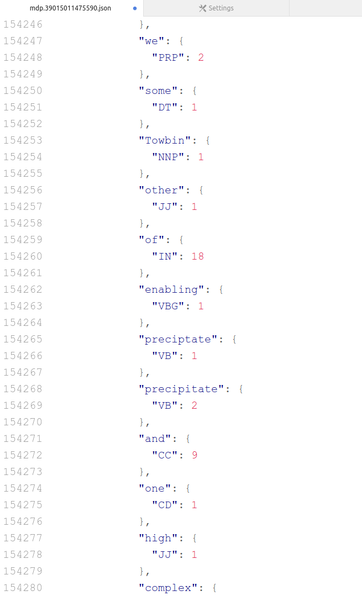
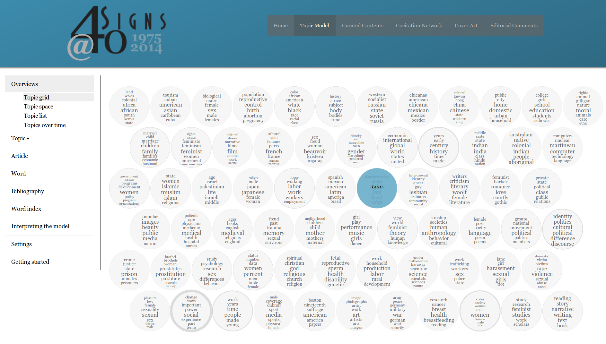

<!doctype html>
<html lang="en">
<head>
<meta charset="utf-8">
<!-- CUSTOMIZE THIS! -->
<title>TDM+R 2019</title>
<meta name="author" content="Christof Schöch">
<!-- END -->
<meta name="description" content="Slides">
<meta name="apple-mobile-web-app-capable" content="yes">
<meta name="apple-mobile-web-app-status-bar-style" content="black-translucent">
<meta name="viewport" content="width=device-width, initial-scale=1.0, maximum-scale=1.0, user-scalable=no, minimal-ui">
<link rel="stylesheet" href="css/reveal.css">
<link rel="stylesheet" href="css/theme/simple.css" id="theme">
<!-- Code syntax highlighting -->
<link rel="stylesheet" href="lib/css/zenburn.css">
<!-- Printing and PDF exports -->
<script>
var link = document.createElement( 'link' );
link.rel = 'stylesheet';
link.type = 'text/css';
link.href = window.location.search.match( /print-pdf/gi ) ? 'css/print/pdf.css' : 'css/print/paper.css';
document.getElementsByTagName( 'head' )[0].appendChild( link );
</script>
<!--[if lt IE 9]>
<script src="lib/js/html5shiv.js"></script>
<![endif]-->
</head>

<body>
<div class="reveal">
<div class="slides">
<section data-markdown="" data-separator="^\n---\n" data-separator-vertical="^\n--\n" data-charset="utf-8" data-background-image="img/basics/uni-trier-icon.png" data-background-size="50px" data-background-position="top 10px right 10px">
<script type="text/template">

<!-- THIS IS WHERE THE CONTENT GOES! -->
<!-- Any section element inside of this container is displayed as a slide -->

##Analysemethoden und Datenformate in den Computational Literary Studies
<br/>
<hr/>
<br/>
Christof Schöch (Trier)
<br/>
<br/>
**Workshop 'Strategien für die Nutzbarmachung urheberrechtlich geschützter Textbestände für die Forschung durch Dritte', 28. November 2019, Trier**
<br/>
<br/>
<hr/>
</img>


---
# Überblick
<br/>
1. [Einleitung](#/2)
1. [Existierende Datensätze](#/3)
2. [Analysemethoden und Datenformate](#/4)
3. [Fazit](#/5)


---
<br/>
<br/>
# 1. Einleitung

--
## Ausgangslage
<br/>
* Das "window of opportunity" für TDM in den CLS lautet 1800-1923/1948<br/>(USA: Publ. / EU: Autor)
* Ausreichend große Mengen an gut digitalisierten Texten (Produktion, OCR)
* Gemeinfrei für die Republikation von Datensätzen (Copyright)
* Damit: Benchmark-Datensätze, Reproduzierbarkeit

--
## Leitfragen
<br/>
1. Welche Analysemethoden sind in den CLS weit verbreitet?
2. Welche Datenformate sind für diese Methoden jeweils notwendig? 
3. Welche Datenformaten sollten priorisiert werden? 


---
<br/>
<br/>
# 2. Existierende Datensätze

--
<a href="img/cangs.png"></a>
<p>CrossAsia N-Gram Service<br/>https://analytics.hathitrust.org/datasets</p>

--
<a href="img/cangs-txt.png"></a>
<p>CrossAsia N-Gram Service<br/>https://analytics.hathitrust.org/datasets</p>

--
<a href="img/csg.png"></a>
<p>Stylo for R Datasets<br/>https://github.com/computationalstylistics/stylo/tree/master/data</p>

--
<a href="img/lee-tdm.png"></a>
<p>Stylo for R Datasets<br/>https://github.com/computationalstylistics/stylo/tree/master/data</p>

--
<a href="img/htrc.png"></a>
<p>HathiTrust Extracted Features Dataset<br/>https://analytics.hathitrust.org/datasets</p>

--
<a href="img/htrc2.png"></a>&nbsp;&nbsp;<a href="img/htrc1.png"></a>
<p>HathiTrust Extracted Features Dataset<br/>https://analytics.hathitrust.org/datasets</p>


---
<br/>
<br/>
# 3. Analysemethoden und Datenformate

--
## Analysemethoden im Überblick
<br/>
* Optical Character Recognition
* Autorschaftsattribution (Textähnlichkeit)
* Topic Modeling (Semantik)
* Text Re-Use / Kollationierung
* Word Embedding Models 
* Sentiment Analysis
* Distinktive Merkmale
* Soziale Netzwerkanalyse

--
## Autorschaftsattribution: Beispiel
<a href="img/ratineaud.png"></a>
<p>Pierre Ratinaud, "The Brilliant Friend(s) of Elena Ferrante", 2018<br/>http://www.padovauniversitypress.it/publications/9788869381300</p>

--
## Autorschaftsattribution: How it works
<br/>
* Prinzip: Textähnlichkeit, Distanzmaße
* Datenformat: Term-Dokument-Matrix
* Parameter: Segmentierung, Wortliste, (Distanzmaß)

--
## Autorschaftsattribution: Datenformat
<br/>
* Datenformat: Term-Dokument-Matrix
* Merkmale (einfachster Fall): Worthäufigkeiten pro Gesamtdokument (1-Gramme)
* Merkmale (bester Fall): token_lemma_pos pro Dokumentabschnitt
* Rekonstruierbarkeit: eindeutig ausgeschlossen
* Fazit: insgesamt problemlos


--
## Topic Modeling: Beispiel
<a href="http://signsat40.signsjournal.org/topic-model/"></a>
<p>Signs@40: Feminist Scholarship through Four Decades, 2014<br/>http://signsat40.signsjournal.org/topic-model/</p>

--
## Topic Modeling: How it works
<br/>
* Umfangreiche Textbestände
* Probabilistische Identifikation von Wörtern, die immer wieder gemeinsam auftreten
* Topics ~ Themen, deren Verteilung untersucht wird (Autoren, Jahre, Gattungen)
* Parameter: Segmentierung, Wortliste, (Topic-Anzahl)


--
## Topic Modeling: Datenformat
<br/>
* Datenformat: Term-Dokument-Matrix
* Merkmale: binär lemma_pos, binär kodiert, pro (kleinem) Dokumentabschnitt; ohne stopwords
* Parameter: 
* Rekonstruierbarkeit: eindeutigst ausgeschlossen
* Fazit: aufwändiger zu produzieren, dennoch problemlos


--
## Text Re-Use: Beispiel
<a href="http://signsat40.signsjournal.org/topic-model/"></a>
<p>Signs@40: Feminist Scholarship through Four Decades, 2014<br/>http://signsat40.signsjournal.org/topic-model/</p>


---
<br/>
<br/>
# 4. Fazit

--
## Ein für non-konsumptives TDM geeignetes Format
<br/>
* Korpusformat: Term-Dokument-Matrix
* Segmentierung: kleinteilig, bspw. 500 Wörter
* Merkmale: Wortform_Lemma_POS: absolute Häufigkeit

--
## Dazu reichhaltige Metadaten (!)
<br/>
* Jahr der Erstveröffentlichung
* Autor inkl. VIAF/GND (oder Merkmale)
* Textlänge
* Vers oder Prosa
* Großgattung (narrativ, dramatisch, lyrisch)


--
<br/>
##

--
## Bibliographie
<small>


</small>


---
<br/>
<br/>
<br/>
## Danke!
<br/>
<br/>
<br/>
<br/>
<br/>
<br/>
<br/>
<hr/>
<p>Christof Schöch, 2019</p>
<p><a href="https://christofs.github.io/">christofs.github.io</a></p>
<p><a href="https://creativecommons.org/licenses/by/4.0/">CC-BY 4.0</a><br/></p>
<hr/>
<br/>
<br/>
</script>
</section>


<!-- DON'T TOUCH UNLESS YOU KNOW WHAT YOU'RE DOING :-) -->
</div>
<script src="lib/js/head.min.js"></script>
<script src="js/reveal.js"></script>
<script>
// Full list of configuration options available at:
// https://github.com/hakimel/reveal.js#configuration
Reveal.initialize({
    controls: true,
    progress: true,
    history: true,
    center: true,
    transition: 'slide', // none/fade/slide/convex/concave/zoom
    // Optional reveal.js plugins
    dependencies: [
        { src: 'lib/js/classList.js', condition: function() { return !document.body.classList; } },
        { src: 'plugin/markdown/marked.js', condition: function() { return !!document.querySelector( '[data-markdown]' ); } },
        { src: 'plugin/markdown/markdown.js', condition: function() { return !!document.querySelector( '[data-markdown]' ); } },
        { src: 'plugin/highlight/highlight.js', async: true, callback: function() { hljs.initHighlightingOnLoad(); } },
        { src: 'plugin/zoom-js/zoom.js', async: true },
        { src: 'plugin/notes/notes.js', async: true }
        ]
    });
</script>
</body>
</html>
